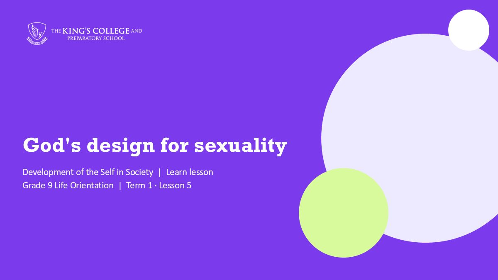

Term 1 · Lesson 5 · Learn lesson
God's design for sexuality
Start here
Today I will
- Explain what sexuality includes
- Describe a biblical view of sexuality and worth
- Identify influences on how teens see sexuality
Where do most teenagers get their ideas about love and relationships? Is that a good source?
Words to know
- Sexuality
- Much more than sex: your body, feelings, identity, values and how you relate to others.
- Identity
- Who you are: beliefs, culture, interests and how you see yourself.
- Puberty
- The stage when your body changes from a child's to an adult's.
- Norms
- Unwritten rules about how people in a group are expected to behave.
- Purity
- Honouring God with your body, thoughts and relationships.
- Values
- Beliefs about what is right and important that guide your choices.
Slides

Notes
Sexuality is a much bigger topic than sex. It includes your body, your feelings, your identity, your values and the way you relate to other people. At King's we look at it from a biblical point of view: every person is made in God's image, with worth, dignity and purpose.
What is sexuality?
Sexuality is about the whole person. It includes:
- your body and how it changes in puberty;
- your feelings, such as attraction and crushes;
- your identity: how you see yourself as a young man or young woman;
- your values and beliefs about relationships, love and marriage;
- how you relate to others: respect, boundaries and friendship.
Puberty is the stage when your body changes from a child's to an adult's. Along with physical changes come new feelings. Attraction and crushes are a normal part of growing up. Feelings are not wrong; what we are responsible for is what we choose to do with them.
God's design
- Made in God's image: every person has equal worth and dignity (Genesis 1:27), so no one may be used, mocked or pressured.
- A good gift: sexuality is created by God as good, with its place in the commitment of marriage.
- My body matters: we honour God with our bodies (1 Corinthians 6:19–20).
- Purity: honouring God with your body, thoughts and relationships, including what you watch, send and say online.
Purity is not about shame. It is about protecting something valuable. Anyone who has made mistakes can start again: God offers forgiveness and a fresh start.
Norms and influences
Norms are unwritten rules about how people in a group are expected to behave. Many messages about sexuality come from the people and media around us, and not all of them are true or healthy.
| Influence | Possible positive message | Possible negative message |
|---|---|---|
| Family | Love, respect and clear values | Silence: the topic is never discussed |
| Friends | Encourage you to wait and respect others | 'Everyone is doing it' (usually not true) |
| Culture and church | Teaching about commitment and marriage | Myths or harmful customs |
| Media | Campaigns about respect and consent | Casual, risky relationships shown as normal; edited 'perfect' bodies |
| Community norms | Respect for women and children | Pressure on boys to 'prove' themselves |
Identity and self-worth
Your worth does not depend on having a boyfriend or girlfriend, on your looks, or on likes and followers. Teenagers who know they are valued (by God, family and friends) are less likely to look for approval in risky relationships. A healthy self-concept and clear values are your best protection.
Why this matters in Grade 9
Teenagers today hear more messages about sexuality than any generation before, through phones, series, music and friends. Many of these messages are confusing or harmful. Knowing what you believe, and why, helps you make wise choices instead of simply following the crowd. This module covers what you need to know about your body, relationships and sexuality, from a biblical point of view.
Case study: what Aarav sees online
Aarav notices that many of the clips on his feed show relationships as casual and fast, and that boys are 'supposed' to brag about girls. Some of his friends laugh at boys who say they want to wait. Aarav feels unsure, because at home and at church he has been taught to respect girls and to see sexuality as something precious for marriage. He talks to Thabo, who admits he feels the same pressure. They agree to call it out when their friends speak disrespectfully about girls, and Aarav decides to unfollow accounts that make him feel he must prove himself.
Questions to think about: What norms is Aarav's feed promoting? Which influences are positive and which negative? How can friends help each other stand by their values?
Respect for everyone
Because every person is made in God's image, we treat everyone with respect, including people who think or live differently from us. We never mock, bully or exclude anyone because of their looks, background, beliefs or choices. Respect and kindness are part of a biblical worldview.
Worked exam answer
Question: Analyse how the media can influence how teenagers see relationships. (1 x 4) (4)
Answer: Series and social media often show casual, risky relationships as normal ✓ which can make teens believe there are no consequences ✓ especially when the people involved are celebrities they admire ✓ so they may feel pressure to copy this behaviour and make risky choices ✓.
Be able to state what sexuality includes (apart from sex), define norms, and analyse how ONE influence (especially media) shapes teenagers' views of relationships.
Sexuality is about the whole person, made in God's image with worth and purpose.
What does it mean that your body is a 'temple of the Holy Spirit' for the choices you make online and offline?
In class: Media check
- Think of a song, series or post about relationships.
- Write one message it sends about love or sexuality.
- Is it healthy or harmful? Why?
- What does God's design say instead?
Test yourself
- Name two things sexuality includes besides sex.
- What are norms?
- Name one influence on how teens see sexuality.
Show answers
1. Any two: body image, feelings, identity, values, relationships. 2. Unwritten rules about expected behaviour. 3. Family, friends, culture, church, media, community.
Finished early?
Answer one harmful media message about relationships with a true, respectful one.
- Choose one harmful message from songs, series or social media, e.g. 'Everyone is doing it' or 'Boys have to prove themselves'.
- Write a short, true counter-message that shows every person has worth and dignity.
- Sketch a poster layout in your LO book: a heading, your message and one picture idea.
- Add one line explaining why your message is healthier than the original.